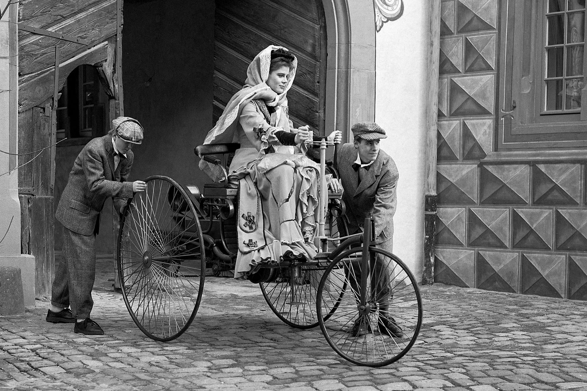
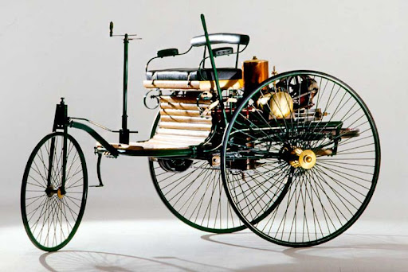

Автомобілі: історія створення

Про перший автомобіль в історії згадувалось ще в середині 18-го століття. У той час використовувалися в побуті паросилові машини, які могли перевозити людей.
Існує думка, що автором креслень першого автомобіля був відомий винахідник Леонардо да Вінчі, але немає точного підтвердження, що це було дійсно так.
У ході розвитку галузі було багато різних варіацій транспортних засобів, які розрізнялися зовнішньо і за принципом роботи. Фантазія конструкторів не мала особливих меж.
Ось наприклад, в 1806 році з’явилися машини, що працюють на пальному газу і мали двигун внутрішнього згоряння.
Потім в подальшому, в 1885 році, були відомі випадки використання газолінового або бензинового двигуна внутрішнього згоряння.

У якийсь період часу автомобіль розцінювався більше як предмет розкоші, і не всі могли собі дозволити придбати таку річ.
Одночасно з цим, в 1884 році, був створений автомобіль на паровій тязі, він називався La Marquise (офіційна назва – De Dion-Bouton et Trepardoux).
Перше конвеєрне виробництво автомобілів було розпочато в 1889 р. в Німеччині Карлом Бенцем. І вже до початку 20-го століття масове виробництво авто почали виробляти у Франції і США.
Цілих 130 років тому інженер Карл Бенц отримав Німецький Імператорський патент за №37435 на Motorwagen – перший автомобіль у світі. Після цього, 30 січня 1886 року, він здійснив першу публічну поїзду містом Мангейм.
Автомобіль був двомісним. Мав високі колеса зі спицями. Важив 250 кг. Рухався завдяки чотиритактному бензиновому мотору з водяним охолодженням.
Мав потужність у 0,9 к. с. Приводився у рух через одну ремінну і дві ланцюгові передачі. Машина їхала зі швидкістю 16 км/год.
Перший автомобіль у світі